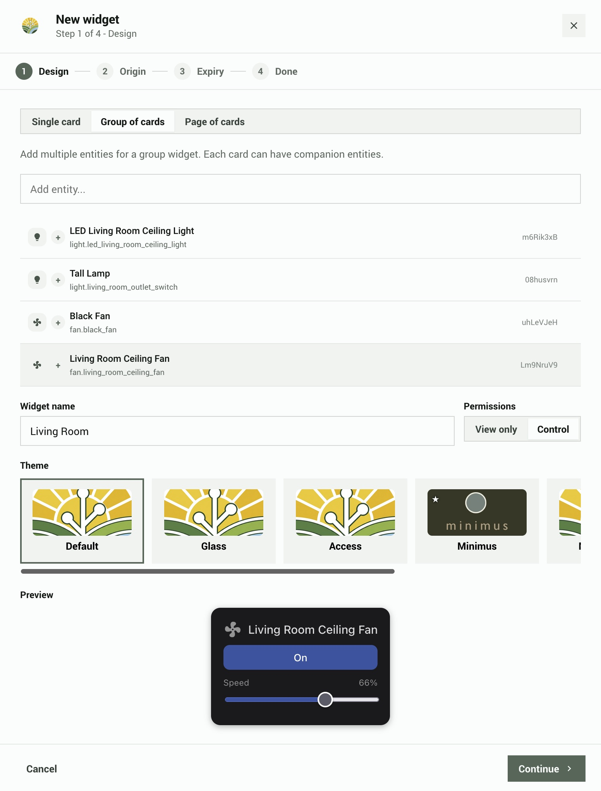
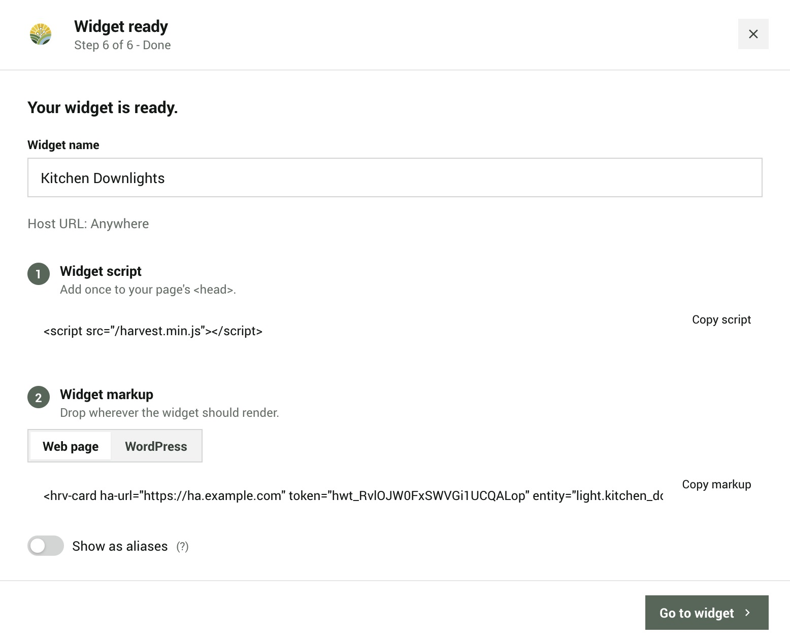

Quick setup
Create a widget for one of your smart home devices, then put it on a webpage. Takes about five minutes. This guide assumes HArvest is already installed.
Create your first widget
From the HArvest panel dashboard, click + Create Widget in the bottom-right corner. This opens the six-step wizard.
Step 1 - Pick entities
Search for the entity you want to embed. The search matches entity IDs and friendly names, for example "Bedroom light" or light.bedroom_main.
- Click an entity to add it. Each one becomes its own card on your page.
- Optionally add companion entities. These are small secondary indicators that appear inside another card, for example a motion sensor pill inside a light card.
- Give the widget a name for your own reference. Visitors to your page never see it.

Step 2 - Set permissions
Decide what visitors can do with your entities:
- View only - visitors see the current state (on/off, temperature, etc.) but cannot change anything.
- Control - visitors can also interact, for example toggling a light or adjusting a thermostat.
This sets the default for all entities in the widget. You can override it per entity later from the widget detail screen.
Step 3 - Set origin
Specify which website is allowed to use this widget. This prevents someone from copying your embed code and using it on a different site.
Enter your site URL (e.g. https://mysite.com) or choose Any website if you don't need this restriction. For widgets that allow control, setting an origin is strongly recommended.
Step 4 - Set expiry
Choose when the widget expires: never, 30 days, 90 days, 365 days, or a custom date. An expired widget can be renewed from the panel at any time.
The Advanced section has additional options you can skip for now:
- Access schedule - limit the widget to specific days and hours (e.g. business hours only).
- IP restrictions - limit connections to specific network ranges.
- HMAC signing - adds a shared secret that the page must prove it knows before connecting. Useful for high-security widgets. See the security page for details.
Step 5 - Choose appearance
Pick a visual theme for the widget cards. A live preview shows your actual entity state with the theme applied, so you can see exactly how it will look.
You can change the theme later from the widget detail screen. Changes apply immediately to anyone viewing the widget, with no page edits needed.
Step 6 - Get the code
The wizard shows a ready-to-paste code snippet. Use the tabs to switch between plain HTML and WordPress shortcode format.
There is also a toggle to use aliases instead of real entity IDs. An alias is a short random code like dJ5x3Apd that stands in for light.bedroom_main, so visitors cannot see your actual Home Assistant entity IDs in the page source.
Copy the snippet and paste it into your page. That's it.

Embed on a plain HTML page
The snippet has two parts. First, a one-time setup block that loads the widget script and tells it where your Home Assistant instance is. Second, one <hrv-card> tag for each entity you want to show.
<!-- Part 1: Load the script and connect to your HA instance (once per page) -->
<script src="/harvest.min.js"></script>
<script>
HArvest.config({
haUrl: "https://myhome.duckdns.org",
token: "hwt_a3F9bC2d114eF5A6b7c8dE",
});
</script>
<!-- Part 2: Place cards anywhere in your page -->
<hrv-card entity="light.bedroom_main"></hrv-card>
<hrv-card entity="sensor.outdoor_temp"></hrv-card>The setup block only needs to appear once, no matter how many cards you add. Place <hrv-card> tags anywhere in the page body where you want a widget to appear.
The HArvest.config() call sets a page-level default. If you need cards from different tokens on the same page, you can set token and ha-url directly on individual cards or card groups instead. See token configuration levels in the widget reference.
Embed on WordPress
If you use WordPress, the wizard generates a shortcode instead of raw HTML. A shortcode is a small tag that WordPress replaces with the widget when the page loads.
[harvest token="hwt_a3F9bC2d114eF5A6b7c8dE" entity="light.bedroom_main"]Paste it into any post or page using the Classic Editor or any editor that allows shortcodes. The HArvest WordPress plugin takes care of the rest: loading the widget script, setting up browser security headers, and matching your site's light or dark mode.
The plugin needs to be installed and configured with your HA URL before shortcodes will work. See the WordPress setup page for the full process.
The Panel guide covers everything you can do from the HArvest panel: display settings, security options, activity logs, and more. The Widget reference has all embed options and the JavaScript API.